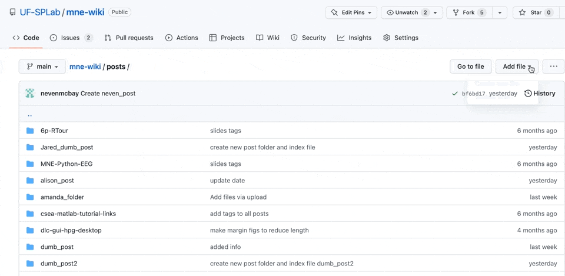
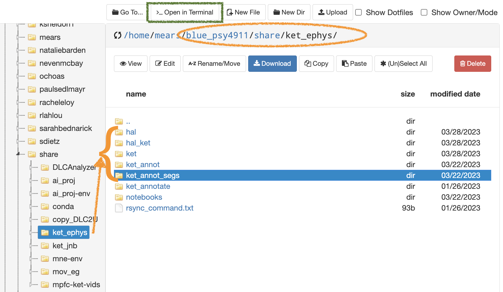

Open-Science-Wiki
Home
MPFC
Misophonia
Useful Links
Code in your files
Acknowledgements
On this page
Lab Information
Meeting Notes
Posts
Edit this page
View source
Report an issue
Categories
All
(24)
AI
(1)
ChatGPT
(2)
Python
(1)
abstracts
(1)
code
(2)
conferences
(1)
definitions
(1)
development
(1)
organization
(1)
posters
(1)
slides
(1)
tutorial
(2)
version control
(1)
Open-Science-Wiki
Lab Information
Order By
Default
Date - Oldest
Date - Newest
Title
Author
Date
Title
Author
Oct 10, 2023
Example template
RPM
No matching items
Meeting Notes
Order By
Default
Date - Oldest
Date - Newest
Title
Author
Date
Title
Author
Jan 25, 2024
Meeting Notes
CA
Oct 10, 2023
Meeting template
RPM
No matching items
Posts
Order By
Default
Title
Date - Oldest
Date - Newest
Author
Books
tidy data

How to make a Wiki post on Github
Markdown is a markup coding language that can be used to convert content written in a plain-text format into HTML. It can be used on Github to make easy to read webpages…
RPM and IF
Apr 1, 2024
Using ChatGPT to explain code
Link to Markdown document
RPM
Feb 15, 2024
PGSO Undergraduate Forum Spring 2024: submission due March 20
conferences
abstracts
posters
Here is an email that was sent out about the upcoming poster competition on April 18.
RPM
Feb 7, 2024
DLC methods
How to write a DeepLabCut Methods Section
RPM
Jan 31, 2024
SFN poster link
RPM
Jan 30, 2024
PGSO 2023 poster link
RPM
Jan 30, 2024
Denotation & Connotation of the term Neurophysiology
ChatGPT
definitions
User Question:
bot
Jan 13, 2024
Initial Survey
Please start the semester by responding to this survey. The goal of this activity is to begin to identify personal priorities and objectives and to think critically about…
RPM
Jan 8, 2024
Meeting Documentation Table
Supervisory
RPM
Dec 30, 2023
Developing a training plan
Specificity
RPM
Dec 24, 2023
SSH to HPG3 and run MNE-BIDS-Pipeline
Type the following command in the terminal:
RPM
Aug 9, 2023

Post template
A better way is to copy all the files from the “psy4911/share” folder to your HiPerGator (HPG) folder. The rsync command for moving files between directories on HPG is…
RPM
Mar 29, 2023
Getting Started with UF Research Computing
If you are in
PSB4934
: skip the next step.
If you’re
not
in PSB4934: Fill out
PSY4911
form and complete 2 training topics i.e., required by Psychology:
FERPA Basics
Maint…
RPM
Jan 29, 2023
Tutorial on MNE-BIDS-Pipeline
slides
RPM
Jan 2, 2023
Sharing Customized Python Environments
Python
code
AI
tutorial
To simply use the environment go to
RPM
Dec 30, 2022
Introduction to GitHub for Open Science
code
development
organization
version control
slides
tutorial
Introduction to Version control for doing open science
R Mears
Jul 11, 2022
Post template
This is a test post.
RPM
Jun 1, 2022
title
ChatGPT
User Question:
bot
Oct 31, 2019
title
There are two new groups set in in Canvas, and each has a main page.
initials
Oct 31, 2019
RPM
Keiler,L.S. 2018.Teachers’ roles and identities in student-centered classrooms. International journal of STEM education, 5, 1-20.
RPM
Oct 31, 2019
No matching items